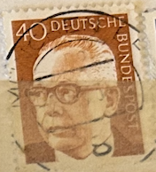
| SOURCE | TITLE| IMAGE MATCH | click to source page |
| Todocolección | sello - deutsches reich / deutsche bundespost - - Buy Antique stamps of Germany on todocoleccion | 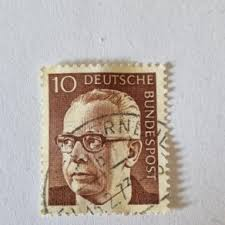 |
| eBay | German Democratic Republic #1188-1192 FDC, 1970 | eBay | 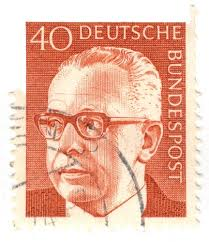 |
| Etsy | 40 Bundespost Deutsche Stamp , Postage Ad2 Black Cancelled Used….. - Etsy | 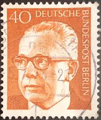 |
| Poppe Stamps | Poppe Stamps: German Federal Republic, 1970, 1536, Presidents, Presidents - stamps for sale by theme and country |  |
| eBay UK | 1970 used postage stamp of the German Federal Republic Gustav Heinemann 40 PGF | eBay UK | 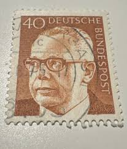 |
| Mystic Stamp | 1029 - 1970 Germany - Mystic Stamp Company | 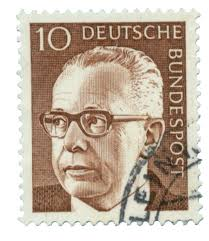 |
| Dreamstime.com | Gustav Heinemann, 3rd Federal President of Germany. Editorial Photography - Image of stamp, history: 388843222 | 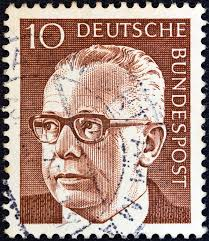 |
| Alamy | Moscow, Russia. 3rd September 2018. Italian actress Ornella Muti attends a press conference after the Moscow pre-premiere of the Crystal Palace international opera-ballet production based on music by American-Maltese composer Alexey Shor | 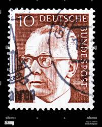 |
| Dreamstime.com | Gustav Heinemann, President of the Federal Republic of Germany West Germany from 1969 To 1974 Editorial Stock Photo - Image of history, national: 223540028 | 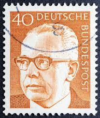 |
| Dreamstime.com | Federal President Dr. Gustav Heinemann and Wallpavillon of the Zwinger (Dresden, Sachsen) Editorial Photo - Image of mail, dresden: 388843176 | 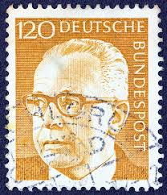 |
| Dreamstime.com | GERMANY - CIRCA 1970: a Postage Stamp from Germany, Showing a Portrait of the Politician and Federal President Gustav Editorial Photo - Image of postmark, leader: 244396426 |  |
| iStock | Postage Stamp Germany Ddr 1951 Stalin And Wilhelm Pieck Stock Photo - Download Image Now - iStock | 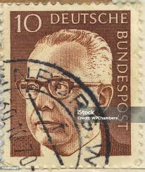 |
| Dreamstime.com | 147 Turkey 1970 Stock Photos - Free & Royalty-Free Stock Photos from Dreamstime |  |
| Dreamstime.com | Gustav Heinemann, President of the Federal Republic of Germany Editorial Stock Image - Image of philatelic, philately: 177916989 |  |
| Dreamstime.com | Dr. H.c. Gustav Heinemann (1899-1976), 3rd Federal President, Federal President Dr Editorial Image - Image of postal, circa: 141359235 | 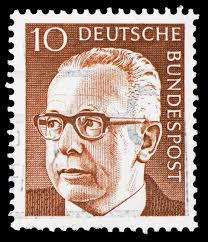 |
| eBay | GERMANY WEST DEUTSCHE BUNDESPOST 1970 GUSTAV HEINEMANN 30 BROWN RED USED TKS270* | eBay |  |
| Dreamstime.com | Heinemann Serie Stock Photos - Free & Royalty-Free Stock Photos from Dreamstime | 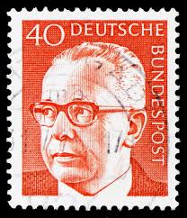 |
| Shutterstock | 2+ Thousand Deutsche Bundespost Royalty-Free Images, Stock Photos & Pictures | Shutterstock | 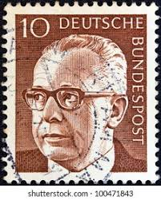 |
| Dreamstime.com | 114 Postmark 1899 Stock Photos - Free & Royalty-Free Stock Photos from Dreamstime | 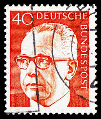 |
| Mystic Stamp Company | 1031-32 - 1971 Germany - Mystic Stamp Company |  |
| lastdodo.com | Dr. Gustav Heinemann 190 (1973) - Germany - LastDodo | 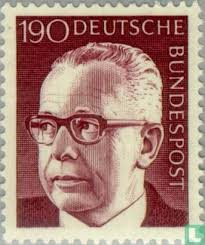 |
| iStock | Former German President On An Old Stamp Stock Photo - Download Image Now - Gustav Heinemann, 1971, Black Background - iStock | 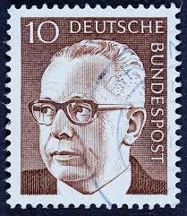 |
| Dreamstime.com | Isolated German Bohemia and Moravia Stamp Editorial Photo - Image of letter, issue: 383932011 |  |
| Alamy | Stamp printed in ddr shows hi-res stock photography and images - Alamy | 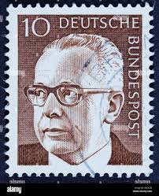 |
| eBay | Politicians Used German & Colonies 1971-1980 Year of Issue Stamps for sale | eBay |  |
| Shutterstock | December 6 2025 Jakarta Indonesia Postage Stock Photo 2721698473 | Shutterstock | 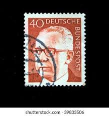 |
| Shutterstock | 60+ Thousand Famous Stamps Royalty-Free Images, Stock Photos & Pictures | Shutterstock | 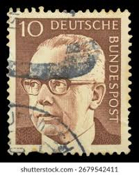 |
| Alamy | Dr h c gustav heinemann 1899 1976 hi-res stock photography and images - Alamy | 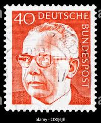 |
| Shutterstock | Germany Circa 1970 Stamp Printed Germany Stock Photo 244874419 | Shutterstock | 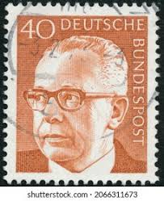 |
| Shutterstock | 2+ Thousand Deutsche Bundespost Royalty-Free Images, Stock Photos & Pictures | Shutterstock | 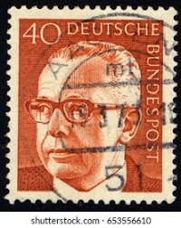 |
| iStock | Gustav Heinemann Stock Photo - Download Image Now - Adult, Adults Only, Black Background - iStock | 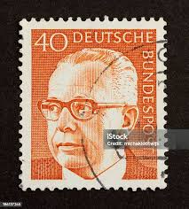 |
| Shutterstock | Germany Circa 1972 Stamp Shows Image Stock Photo 103512434 | Shutterstock | 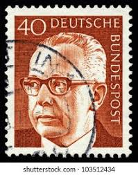 |
| ebid.net | Germany 1970 Bundespost Gustav Heinemann 10Pfg Used Stamp on eBid United States | 215159353 | 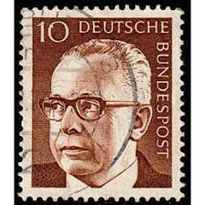 |
| iStock | German Democratic Republic Stamp Shows Walter Ulbricht Stock Photo - Download Image Now - iStock | 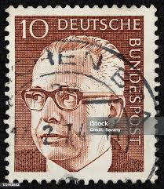 |
| Alamy | President heinemann hi-res stock photography and images - Alamy | 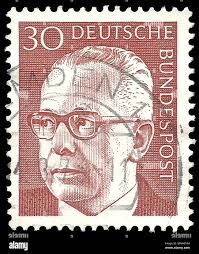 |
| Todocolección | s-00872- alemania. germany. deutschland. - Buy Antique stamps of Germany on todocoleccion | 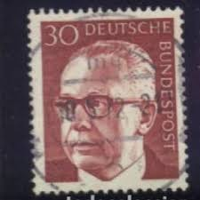 |
| Amazon.com | Amazon.com: FRD (FR.Germany) 727-732 (Complete.Issue) unmounted Mint/Never hinged ** MNH 1973 Gustav Heinemann (Stamps for Collectors) : Toys & Games | 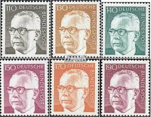 |
| Shutterstock | 5+ Hundred Heinemann Royalty-Free Images, Stock Photos & Pictures | Shutterstock |  |
| Dreamstime.com | Gustav Heinemann Presidente De La República Federal De Alemania Occidental De 1969 a 1974 Foto de archivo editorial - Imagen: 223540028 |  |
| Alamy | Influential political intellectual hi-res stock photography and images - Alamy |  |
| Dreamstime.com | Isolated German Polizei Logo in Front of Police Station Against Blue Sky Editorial Image - Image of germany, german: 178790435 |  |
| Forensic Technology for the examination of postage stamps, letters, and items of philatelic interest |  | |
| Shutterstock | Pasuruan Indonesia August 29 2025 Germany Stock Photo 2679542411 | Shutterstock |  |
| Shutterstock | 298 Gustav Heinemann lizenzfreie Bilder, Stockfotos und Aufnahmen | Shutterstock | 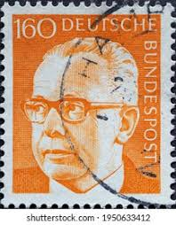 |
| Dreamstime.com | Gustav Heinemann, Tercer Presidente Federal De Alemania Fotografía editorial - Imagen de político, sello: 388843222 | 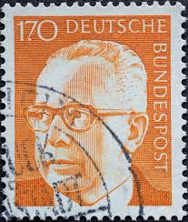 |
| Shutterstock | 100+ Thousand Order Merit Federal Republic Germany Royalty-Free Images, Stock Photos & Pictures | Shutterstock |  |
| The Philately | Germany 1971-1972 Mi 689-692 Federal President Dr. Gustav Heinemann Sc 1030A, 1034, 1039, 1042 for sale at The Philately |  |
| Encyclopaedia Philatelica | Bundespräsident der Bundesrepublik Deutschland (Bonn), 1969-1974 - Encyclopaedia Philatelica | 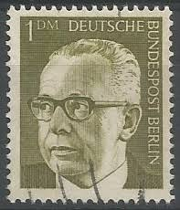 |
| Alamy | Postage stamps from Germany in the Welfare: Dolls series issued in 1968 Stock Photo - Alamy | 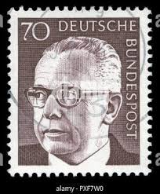 |
| eBay | GERMANY 1039 - President Gustav Heinemann "1972 Ocher" (pc14379) | eBay | 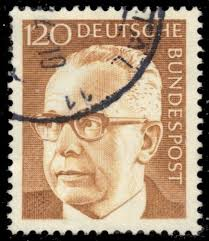 |
| eBay | Germany - 1970 - 30Pfg - Gustav Heinemann - #17929 | eBay | 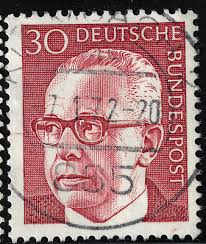 |
| eBay | GERMANY 1037 - President Gustav Heinemann "1971 Magenta" (pb46460) | eBay |  |
| eBay | GERMANY DEUTSCHE BUNDESPOST 1970 40 Pfeing Orange - USED Actual Stamp TKS159* | eBay | 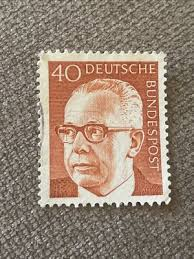 |
| eBay | GERMANY WEST DEUTSCHE BUNDESPOST 1970 GUSTAV HEINEMANN 10 BROWN - USED TKS203* | eBay | 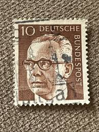 |
| eBay | BRD FRG #Mi730 MNH 1972 Gustav Heinemann President [1041 YT516E SG1551] | eBay | 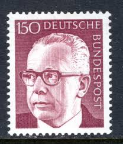 |
| eBay | GERMANY 1042A - President Gustav Heinemann "1972 Orange" (pc16832) | eBay | 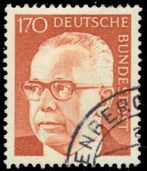 |
| eBay | 1971 German Stamp 40ph PRESIDENT GUSTAV HEINEMANN | eBay | 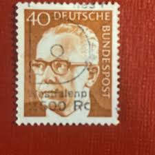 |
| eBay | BRD FRG #Mi638 MNH 1971 Gustav Heinemann President [1031 YT509 SG1539] | eBay | 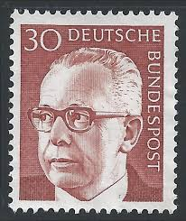 |
| eBay | GERMANY WEST DEUTSCHE BUNDESPOST 1970 GUSTAV HEINEMANN 40 ORANGE - USED TKS268* | eBay | 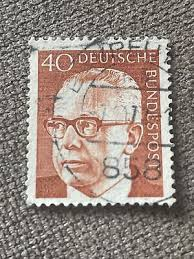 |
| Alamy | Old stamp from germany hi-res stock photography and images - Alamy | 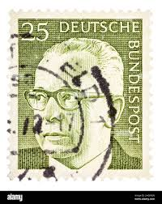 |